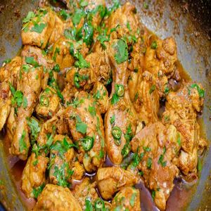

Biryani
Biryani is an intricate rice dish made with layers of curried meat and rice. Given its use of adornments and luxurious finishes, it’s no surprise that biryani has roots in Persian cuisine.
Click the image above to view the recipe

Rasmalai
Ras Malai is a popular Pakistani delicacy made with milk,a curdling agent,sugar, nuts, saffron and cardamoms
Click the image above to view the recipe

Chicken Karahi
Chicken Karahi is a tomato and ginger based, thick masala curry which is though to originate from the Khyber Pakhtunkhwa region.
Click the image above to view the recipe